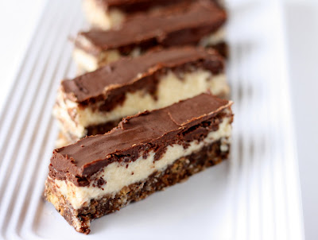

Home
Nanaimo Bars

Description
From the heart of Nanaimo, British Columbia, comes one of Canada's most beloved sweet treats. Our Nanaimo bars are rich, indulgent, and unmistakably Canadian. They start with a decadent, no-bake base of chocolate, graham cracker crumbs, coconut, and walnuts—dense and satisfying. The middle layer is a smooth, creamy custard buttercream, proudly tinted a sunny Canadian yellow. It's all topped with a glossy layer of semi-sweet chocolate that cracks just right with each bite. Sweet, nostalgic, and unmistakably ours, Nanaimo bars are more than dessert—they're a taste of Canadian heritage.
Ingredients
- 1 cup butter, softened, divided
- 5 tablespoons unsweetened cocoa powder
- ¼ cup white sugar
- 1 large egg, beaten
- 1 ¾ cups graham cracker crumbs
- 1 cup flaked coconut
- ½ cup finely chopped almonds
- 3 tablespoons heavy cream
- 2 tablespoons custard powder
- 2 cups confectioners' sugar
- 4 (1 ounce) squares semisweet baking chocolate
- 2 teaspoons butter
Steps
- Gather all ingredients
- In the top of a double boiler, combine1/2 cup softened butter, cocoa powder, and sugar. Stir occasionally until melted and smooth. Beat in egg and stir until thick, 2 to 3 minutes.
- Remove from the heat and mix in graham cracker crumbs, coconut, and almonds. Press into the bottom of an ungreased 8x8-inch pan.
- For the middle layer, beat remaining 1/2 cup softened butter, heavy cream, and custard powder until light and fluffy. Mix in confectioner's sugar until smooth. Spread over the bottom layer in the pan. Chill to seet.
- While the second layer is chilling, melt semisweet chocolate and 2 teaspoons butter together in the microwave or over low heat.
- Spread melted chocolate mixture over chilled bars.
- Let the chocolate set before cutting into squares.